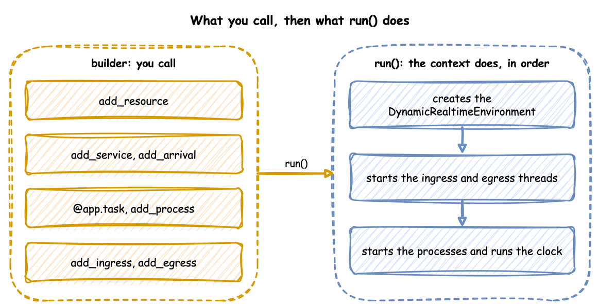

Builder API
This page writes a whole simulation as one Python file with the builder, SimulationContext: a shop that packs orders with boxes from stock, prints a label, and leaves the parcel for a courier. It builds on Writing a Model, which places the builder between a blueprint and the low-level API, and on Tasks and Processes, which describes what a task does.
What It Is
The builder works in two phases. You describe the simulation with its methods and decorators, and nothing runs. run() then builds the environment and the connectors and starts the clock:

Until run() builds the environment, the runtime helpers context.spawn, context.call, context.signal, context.get_resource, context.get_store, context.get_container and context.env raise RuntimeError. Loops, tasks and processes run only after that, so the helpers belong inside them.
How to Use It
Create the Context
The context names the simulation and sets its clock: factor for the pacing, random_seed for the draws, logical_start_time for the timestamps. It also takes go_live_at and warmup, which Time and Pacing describes.
| docs/snippets/pages/builder.py:clock | |
|---|---|
Declare Resources, Stores and Containers
A task holds a resource while it works. A container holds an amount and a store holds items, and tasks take from and add to both. add_variable registers any other live value. Resources and Stores and Containers describe each.
Add Distributions
Each service is a distribution, given its parameters by keyword. Each arrival is a distribution too, and Start Them from Arrivals adds it with the task it starts. A parameter out of range, or one the family does not take, raises ValueError here, before the run. Arrivals and Services lists the ten families.
| docs/snippets/pages/builder.py:distributions | |
|---|---|
Write the Tasks
@app.task turns a function into a task: it publishes queued, waits for its resource and its get, publishes started, waits the service time, adds its put, and publishes what the function returns as the finished event. next names the task that follows, and the function receives upstream, entity or item when it declares them. Task Flow covers rules and weights.
Start Them from Arrivals
add_arrival with spawn= is the builder form of YAML's spawn: each arrival starts the named task for its entity, keyed orders-1, orders-2 and so on. The record's instance comes from the task's one counter, which next and other arrivals share, so no two runs of the task share an id. A spawn that names a task never added is refused when run() checks the model.
| docs/snippets/pages/builder.py:arrivals | |
|---|---|
@app.arrival_loop runs a generator of your own that waits with context.wait_for_arrival and starts tasks with context.spawn. A loop is needed only when it does more than start one task, such as choosing the task from the entity's attributes. Tasks and Processes shows a loop that does what spawn= does, written by hand.
Arguments for the Keys of a Blueprint
Every key of a blueprint has a builder argument of the same meaning. This script uses the ones that shape what an arrival and a task start with:
A generator is written with generator({...}), and a payload with Template(...), both from desflow.values. Template takes vars= and vars_once= as a task's vars and vars_once do. The task side:
The first order starts at 5 s, then one starts every 30 s, and the fourth is the last. The keys are order-0 to order-3. record runs but publishes no finished record.
A resource a task waits for can have its own queue order, a family of members, and a signal that wakes the task. This script holds a unit of bench by priority, gives up after 15 s, opens a request for one desk and cancels it, and listens for a defused signal:
| docs/snippets/pages/builder_holding.py:holders | |
|---|---|
An order arrives every 10 s and packing takes 18 s, so the third order waits from 30 s, passes its patience of 15 s at 45 s, and goes to gave_up with a record {'event_type': 'left', 'key': 'orders-3'}.
The other arguments follow the key of the same name:
| Call | Arguments |
|---|---|
add_arrival |
group, active, off_mode, initial, and the distribution parameters. |
add_arrival_replay |
time, unit, fields, on_invalid, active, off_mode, attributes, key, vars. |
add_initial_arrival |
initial entities at the start, with spawn, attributes, key, gap, vars. |
add_resource |
queue, preempt, queue_limit, type, family, members. |
add_signal |
once, on, family, members, defused. |
with_stats |
level, interval, on_change, trace. |
add_readings |
interval and a mapping of reading names to expressions. |
add_breakdown |
resource, time_to_failure, repair, work, clock. |
add_egress |
when, batch_size, flush_interval, envelope. |
A task takes the keys of a blueprint task as arguments too:
seize,release,open,cancel,signal,interrupt,resume. A name or the same mapping as the key. A request thatopenmakes has apreemptedattribute, which is true once a higher priority took the unit.preempt. A boolean or a boolean word:preempt="f"is false, as in YAML.on_interrupt,on_interrupt_next,on_interrupt_run.on_interrupt_runandresumetake the same forms as the keys of those names.on_renege,on_balkandon_failtake no extra argument.listenandfail_reason.listenis the mapping of the key.fail_reasonis text, an expression or a generator.add_signal(defused=True)and theon=actionsfail,defused,priorityandwhenare the blueprint forms.spawn. A mapping withtask,count(a number, an expression or a function),copy_attributesandargs.countas text reads the run and the names of the running process.set_args,activate,deactivate.set_argswrites values in the flow's own process arguments, afterset.activateanddeactivateswitch on or off the arrivals the task names, in one name or a list.batch. The batching mapping of the key.history,Templateandnote_values.history=keeps rows for a task that aTemplateor an aggregate looks up. The builder does not scan aTemplatefor the tasks it names, sonote_values("<task>", template)tells it to, and gives theTemplatethe full gate: itspayload,varsandvars_onceare searched, and the start is dropped before the function runs. Without it, aTemplatewith alookupof a task with no row drops the start after the task function has returned it. By then thequeuedandstartedrecords have been published, the item of agethas been consumed, and the units andwaitrequests are given back. The builder refuses an unknown lookup target, a tasknote_valuesnames that does not exist, and a cycle.note_values(task, *places)also takes generators written in your own code, but not a set or an iterator.Transfer(item=)andSignal.processed.Transfer(item=...)is the item a storeputadds: a constant, text or a generator, andSignal.processedis true once the signal has fired and its callbacks have run.
A row generator written in a script, through generator(spec) or a Template, is read from the working directory at the call that adds it: add_arrival, add_arrival_replay, add_initial_arrival, add_store, add_scenario, add_step, add_signal and task. A missing or unusable file raises ValueError there, naming the generator's place and the file. A blueprint reads the same files from its own folder. A row gives a mapping, so a place that needs a number or text takes it only inside another generator.
with_stats(on_change=True) also publishes a resource's readings right after each request and release call on it, and needs a level above none. with_stats(trace=True) publishes one trace record for each event the environment processes, to the sinks added with add_egress(provider, when="trace") and to no other, and env.trace_events(False) switches it off during a run. add_breakdown(clock="calendar") counts the time to failure from the start or the last repair, and clock="busy" counts it only while the resource holds a unit. run(until, segments=..., steps=..., sync=...) has the meaning of the YAML run keys, which Run Length shows in the Builder tab.
Measure the Run
with_stats switches on the built-in statistics, published as telemetry. Statistics lists the levels.
| docs/snippets/pages/builder.py:stats | |
|---|---|
Add a Process
add_process is for anything that is not a task. It calls a generator with the context when the run starts. Here the process is a speed that drifts.
Attach the Connectors
add_ingress brings parameter changes in, and add_egress writes records out, each with its own batching if it needs it. Ingress and Egress list the connectors.
| docs/snippets/pages/builder.py:connectors | |
|---|---|
LocalIngress counts its delays in wall-clock seconds, so the change to 3 packers is due 5 seconds after the run starts. This unpaced run ends in under a second, so the change never lands. At factor=1.0, it lands 5 seconds into the run. For a change at an exact simulation time, use a scenario step, add_step(at, path=..., value=...) or add_scenario(steps), which Live Parameters describes. A process that waits and then updates the registry, as speed_drift above does, also works.
compile_parameters() returns the SimParameter that run() will register. Call it to check the registry paths before a run. A resource has three: current_cap, max_cap and queue_limit, which is None when unset. A limit changes through its path, <sim_id>.resources.<name>.queue_limit, in a scenario step, an on: action or a low-level set, and not by assigning queue_limit, which is read-only. The new limit applies from the next request, and a smaller one removes nobody who waits. A resource with its own PutQueue has no queue_limit path:
| docs/snippets/pages/builder.py:compile | |
|---|---|
Run It
| docs/snippets/pages/builder.py:run | |
|---|---|
app.on_change takes callbacks that receive every parameter change of each run start() builds, as Follow Every Change shows.
ConsoleEgress writes each batch of records in one INFO log call, one line per record, so the script switches logging on before it runs. Only the first line of a batch carries the logging format's prefix, such as the time and the level. The other lines are bare. The first events of the run:
How It Works
run() takes the steps a low-level script writes by hand, in the same order, which What run() Does lists. It adds these:
- A seed for every run. It makes
Sampler(seed=random_seed), and draws and logs a seed when there is none. - Resources, stores and containers. One for each
add_resource,add_storeandadd_container, whichcontext.get_resource,get_storeandget_containerreturn.add_resourcetakes atype, a subclass ofResourceBaseto build the resource from (Custom Resource Types).add_storeandadd_containertake atypetoo, a subclass ofStoreBaseorContainerBase(Custom Store and Container Types). A store or container with nocurrent_capand nomax_caphas no limit. - Tasks.
@app.taskpublishesqueued,startedand the finished event with the entity key, task and instance, reports each step to the statistics, takes and adds stock, and routes to the next task with aRouter. - Entities.
context.wait_for_arrivalreturns anEntitywith its key and attributes. - Names with the
sim_id.context.publish(name, value)puts thesim_idin front of the name. The low-levelenv.publish_telemetryuses the name as given.
Stability and Limits
A mistake stops the script before the clock starts. A method raises ValueError when it is called with a value it cannot take:
- an
environmentthat is not a subclass ofDynamicRealtimeEnvironment; - a
fireaction withurgentorafteron a signal that is notonce=True(raised atstart()); - a negative
after; - a distribution parameter out of range, or one its family does not take;
- an unknown queue order;
- a
current_capormax_capthat is not a whole number or infinity, or amax_capbelow 1 given with nocurrent_cap; - a
typethat is not a subclass ofResourceBase; - a negative
queue_limit, or one on atypewith aPutQueueof its own; - a task with a resource but no service, or a priority without a resource;
- an unknown
on_interrupt; - a second task with the same name;
- a
spawnwith anafterof 0 or less; - a
fireaction given bothvalueandfrom; - a time that is NaN,
trueor negative where a time must not be (factor,warmup,lag_interval, apatience, a wait timeout, a segmentuntil), andfactoras text such as"2 min", because it is a number; - a drain
limitof 0, below 0 or NaN (infinity is no limit); - a batch size that is not a whole number of 1 or more, and an interval that is not above 0, in
with_batchingandadd_egress; - a
current_cap,max_caporqueue_limitbelow 0, andtrueor a fraction where a whole number is needed; - a distribution parameter that is
true, NaN or infinity, or a negativelowor value in a time distribution; - a rank or priority that is NaN, or text for a ranked queue or a resource priority;
- a name used in two of resources, stores, containers and signals, or one that holds a dot or a space (a second
add_arrivalof one name replaces the first); - a
stopon a signal family or a stop condition that readsattrorpayload, anactivateordeactivateof an arrival that is unknown, segment ends that do not increase, and a spawncountbelow 0.
A start() that is refused leaves the open run as it was.
run() then checks what each task names, before the clock or any connector starts. It raises ValueError for:
- a resource, service, store, container, signal or task that was not added;
- a priority on a resource that does not queue by priority;
- a task that keeps a resource for a task that requests it in its
wait; - a spawned task that shares an arrival's name;
- a
fireaction'sfromthat names both a signal and a task, or neither; - a
level.<name>,users.<name>,queue.<name>,signal.<name>,wait.<branch>orregistry["..."]that an expression reads but that does not exist.
Two tasks that acquire resources in opposite orders load and log one WARNING, and seize counts as holding. The builder's limits are those of its tasks and its resources:
- Resources are fixed when the run starts.
run()creates every resource, store and container before the clock starts, and has no call to add one later. A process can add one throughcontext.env, as Add Resources Mid-run shows. advance()needs a started run. It raisesRuntimeErrorbeforestart(), afterclose()and after the run's own end, andValueErrorfor a time that is not afternow.step()raisesRuntimeErrorafter the run's end too, andpeek()gives infinity, so a loop ofpeek()andstep()ends. Run in Segments shows it.strictis left unset by default. It is true whenfactoris above 0 orgo_live_atis set, and false otherwise. Strict Pacing gives what it does and its default in each API.environment=takes a subclass ofDynamicRealtimeEnvironment. The context builds it instart()with the same arguments it would give its own environment, so its__init__takes**kwargsand passes them on.- A subscribe refuses a processed event.
context.subscribe(event)raisesRuntimeErrorwhen the event has already happened, or when it is called outside a process.
The complete file, which the documentation tests run, is docs/snippets/pages/builder.py. Low-level API writes the same kind of model by hand. A blueprint makes the same builder calls from a file, as YAML Blueprints describes.